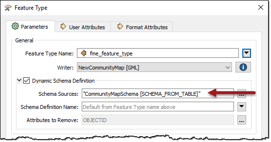
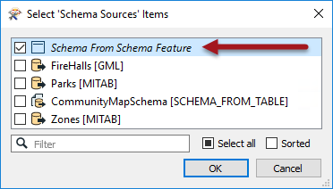

After completing this lesson, you'll be able to:
Generally, the schema for a dynamic translation comes from either the source dataset itself or from a different dataset (such as the database table where FME is writing the data).
However, there are other scenarios for providing the output schema:
In this scenario, a text file or spreadsheet stores the output schema. For example:
Here the author has listed a series of feature types, attributes, and geometry types that define the output schema. In FME, they would use this schema by adding a Resource Reader. The format of the Resource Reader would be Schema (From Table):

In the parameters dialog for this reader, there are parameters to specify which fields in the table represent which parts of the schema:

The geometry type is optional but used in this example.
Attribute sequence is another optional parameter. It defines a field in the table that records the order in which attributes should appear.
Then, of course, this reader must be used as the source for the output schema:

As always, we must map the incoming attributes to the outgoing schema. The best way here is the SchemaMapper transformer since it, too, can use a lookup table to create its mappings.
A common source of the schema for dynamic workspaces is the FeatureReader transformer. Because you can supply initiator features to control what the FeatureReader reads, you might not always know what schema you will receive back in advance. In those cases, you can use the <Schema> output port to send a schema feature to a dynamic writer feature type. This feature type can then use that feature, which contains a list of attributes and their types, to set the output schema.
Consider this example. You might be reading querying an API that returns a list of URLs to attachments stored in CSV format. You then want to read those CSVs and write them out to a local folder, but you don't know the schema in advance. You can accomplish this with a FeatureReader. Your workspace might look like this:

There are a few critical settings behind this workspace:
You can learn more about working with schema features in the next course in this Learning Path, Construct Schema Dynamically with the SchemaScanner.
See this article for more on the specific kind of workflow shown in the example above. You can also view the example here dynamic-schema-feature-example.fmw (C:\FMEData\Resources\DesktopAdvanced\dynamic-schema-feature-example.fmw).
You can also manually construct schema features using lists in FME. The attributes in the list define the schema. For example:

You can tell the writer to use this schema in preference to any others by selecting it as the Source Schema:

All of the methods covered in this course allow the user to define attribute types in an output schema. There are a set of valid datatypes in FME, which are as follows:
| General Field Type | Specific Field Types |
|---|---|
| Character Fields | fme_varchar(width), fme_char(width), fme_char |
| Integer Fields | fme_uint8, fme_int16, fme_uint16, fme_int32, fme_uint32, fme_int64,fme_uint64 |
| Numeric Fields | fme_decimal(width,decimal), fme_real32, fme_real64 |
| Date-Time Fields | fme_datetime, fme_time, fme_date |
| Other Fields | fme_buffer, fme_boolean |